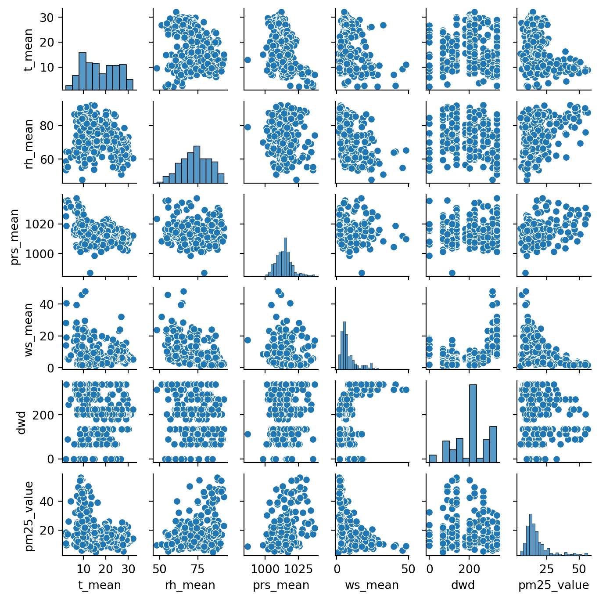
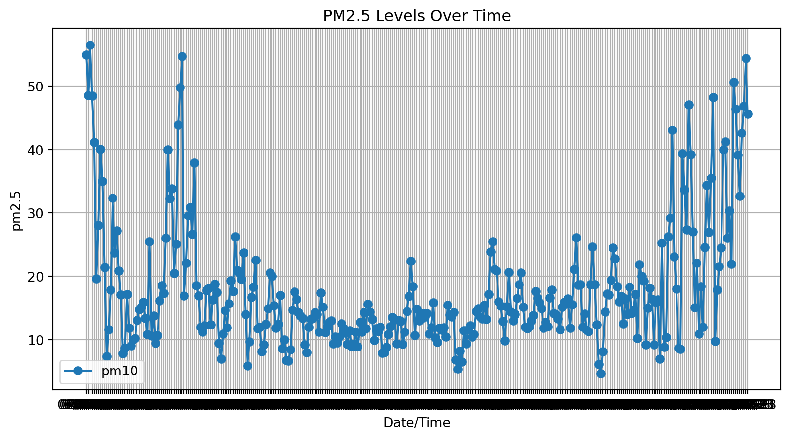
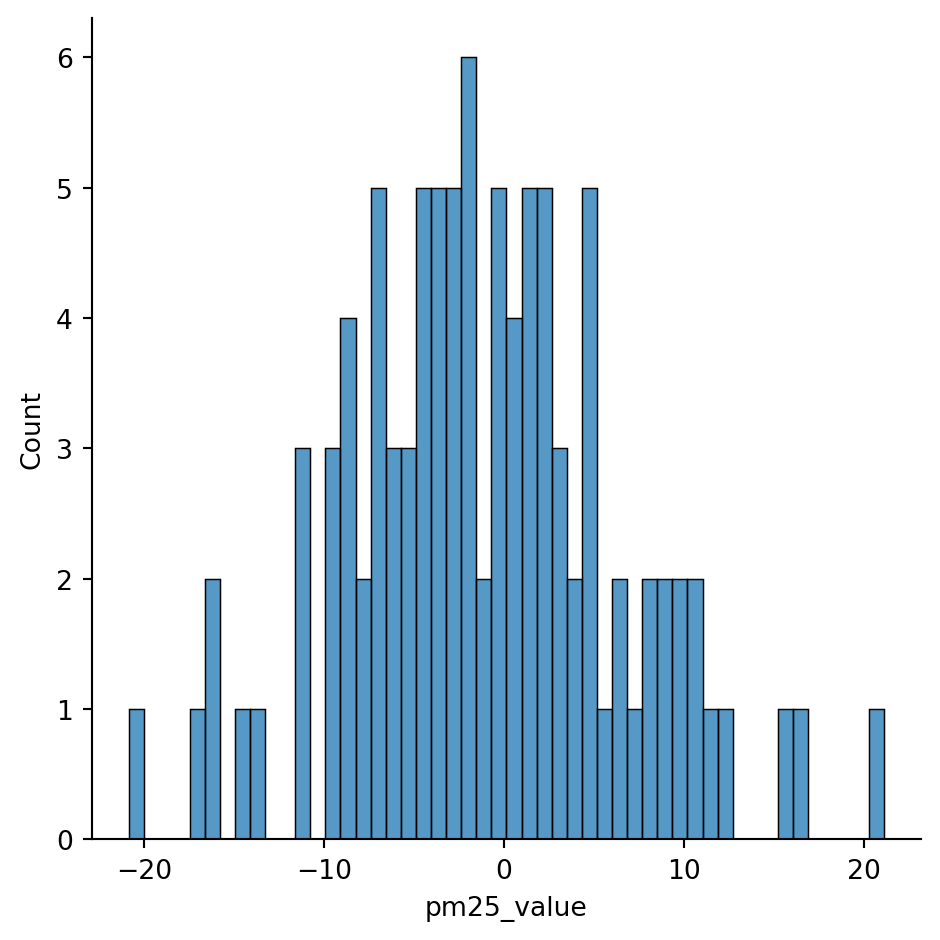

import pandas as pd
import numpy as np
import matplotlib.pyplot as plt
import seaborn as sns
import janitor
from sklearn.model_selection import train_test_split
from sklearn.linear_model import LinearRegression
from sklearn.metrics import mean_absolute_error, mean_squared_error
%matplotlib inlineAir Quality Regression Analysis
Imports
Let’s start by importing the libraries we are going to use:
And now let’s import our weather data:
data_raw_weather = pd.read_csv(
"data/historic_data/thessaloniki-meteo-2023.csv",
header=0
)
data_raw_weather.tail()| Date | T_mean | T_max | T_min | RH_mean | RH_max | RH_min | Prs_mean | Prs_max | Prs_min | Ac_R | WS_mean | DWD | WG | |
|---|---|---|---|---|---|---|---|---|---|---|---|---|---|---|
| 360 | 27/12/23 | 11.4 | 16.6 | 7.9 | 81.2 | 94 | 67 | 1022.7 | 1027.0 | 1019.4 | 0.0 | 6.8 | W | 27.4 |
| 361 | 28/12/23 | 10.0 | 14.6 | 6.7 | 85.2 | 90 | 75 | 1026.4 | 1028.9 | 1023.5 | 0.0 | 1.8 | SSW | 8.0 |
| 362 | 29/12/23 | 9.0 | 12.9 | 6.3 | 90.4 | 95 | 78 | 1021.3 | 1023.5 | 1019.7 | 0.4 | 2.0 | E | 12.9 |
| 363 | 30/12/23 | 8.4 | 12.4 | 5.6 | 90.3 | 96 | 76 | 1019.8 | 1021.4 | 1018.7 | 0.2 | 2.0 | ESE | 11.3 |
| 364 | 31/12/23 | 9.5 | 12.4 | 7.1 | 84.0 | 92 | 70 | 1019.4 | 1021.0 | 1018.2 | 0.2 | 1.7 | SW | 9.7 |
and AQ data:
# Read the JSON Lines file
data_raw_aq = pd.read_json("data/historic_data/Thessaloniki_PM25_2023.json", lines=True)
data_raw_aq = data_raw_aq.clean_names(remove_special=True)
data_raw_aq.head()| samplingpoint | pollutant | start | end | value | unit | aggtype | validity | verification | resulttime | datacapture | fkobservationlog | |
|---|---|---|---|---|---|---|---|---|---|---|---|---|
| 0 | GR/SPO-GR0018A_06001_101 | 6001 | 1672531200000 | 1672534800000 | "83000000000000000000" | ug.m-3 | hour | 1 | 1 | 1.727180e+12 | NaN | a6869f9b-f137-4bc0-aefb-bf229e648c71 |
| 1 | GR/SPO-GR0018A_06001_101 | 6001 | 1672534800000 | 1672538400000 | "71000000000000000000" | ug.m-3 | hour | 1 | 1 | 1.727180e+12 | NaN | a6869f9b-f137-4bc0-aefb-bf229e648c71 |
| 2 | GR/SPO-GR0018A_06001_101 | 6001 | 1672538400000 | 1672542000000 | "77000000000000000000" | ug.m-3 | hour | 1 | 1 | 1.727180e+12 | NaN | a6869f9b-f137-4bc0-aefb-bf229e648c71 |
| 3 | GR/SPO-GR0018A_06001_101 | 6001 | 1672542000000 | 1672545600000 | "63000000000000000000" | ug.m-3 | hour | 1 | 1 | 1.727180e+12 | NaN | a6869f9b-f137-4bc0-aefb-bf229e648c71 |
| 4 | GR/SPO-GR0018A_06001_101 | 6001 | 1672545600000 | 1672549200000 | "54000000000000000000" | ug.m-3 | hour | 1 | 1 | 1.727180e+12 | NaN | a6869f9b-f137-4bc0-aefb-bf229e648c71 |
Data Cleaning
Column fixing
Weather dataframe
I’ll start by dropping the columns I don’t need and standarizing column names:
data_raw_weather = data_raw_weather.drop([
'T_max', 'T_min', 'RH_max',
'RH_min','Prs_max', 'Prs_min',
'Ac_R', 'WG'
], axis=1)
data_raw_weather = data_raw_weather.clean_names(remove_special=True)AQ Dataframe
data_raw_aq = data_raw_aq.clean_names(remove_special=True)
# Convert 'Value' to numeric (remove extra quotes)
data_raw_aq['value'] = data_raw_aq['value'].str.replace('"', '').astype(float) / 1e18
# Convert 'Start' from milliseconds to datetime and format as 'dd/mm/yy'
data_raw_aq['start'] = pd.to_datetime(data_raw_aq['start'], unit='ms').dt.strftime('%d/%m/%y')
data_raw_aq.head()| samplingpoint | pollutant | start | end | value | unit | aggtype | validity | verification | resulttime | datacapture | fkobservationlog | |
|---|---|---|---|---|---|---|---|---|---|---|---|---|
| 0 | GR/SPO-GR0018A_06001_101 | 6001 | 01/01/23 | 1672534800000 | 83.0 | ug.m-3 | hour | 1 | 1 | 1.727180e+12 | NaN | a6869f9b-f137-4bc0-aefb-bf229e648c71 |
| 1 | GR/SPO-GR0018A_06001_101 | 6001 | 01/01/23 | 1672538400000 | 71.0 | ug.m-3 | hour | 1 | 1 | 1.727180e+12 | NaN | a6869f9b-f137-4bc0-aefb-bf229e648c71 |
| 2 | GR/SPO-GR0018A_06001_101 | 6001 | 01/01/23 | 1672542000000 | 77.0 | ug.m-3 | hour | 1 | 1 | 1.727180e+12 | NaN | a6869f9b-f137-4bc0-aefb-bf229e648c71 |
| 3 | GR/SPO-GR0018A_06001_101 | 6001 | 01/01/23 | 1672545600000 | 63.0 | ug.m-3 | hour | 1 | 1 | 1.727180e+12 | NaN | a6869f9b-f137-4bc0-aefb-bf229e648c71 |
| 4 | GR/SPO-GR0018A_06001_101 | 6001 | 01/01/23 | 1672549200000 | 54.0 | ug.m-3 | hour | 1 | 1 | 1.727180e+12 | NaN | a6869f9b-f137-4bc0-aefb-bf229e648c71 |
Missing Values
Weather dataframe
Let’s check the number of na values:
# Calculate missing values
missing_values_weather = data_raw_weather.isnull().sum()
print(f"""Missing values per column in Weather dataset:
{missing_values_weather}""")Missing values per column in Weather dataset:
date 0
t_mean 0
rh_mean 0
prs_mean 0
ws_mean 0
dwd 0
dtype: int64AQ Dataframe
Glancing through the data, I noticed that there are data points marked as ‘-9999’, meaning they are null. I’ll keep them for the time being, so that joining the tables will still work, and remove them once the join has been done.
# data_raw_aq = data_raw_aq.replace('-9999', np.nan)
# Calculate missing values
missing_values_aq = data_raw_aq.isnull().sum()
print(f"""Missing values per column in Weather dataset:
{missing_values_aq}""")
# data_clean_aq = data_raw_aq.dropna()
# missing_values_aq = data_clean_aq.isnull().sum()
# print(f"""Missing values per column in cleaned Weather dataset:
# {missing_values_aq}""")Missing values per column in Weather dataset:
samplingpoint 0
pollutant 0
start 0
end 0
value 0
unit 0
aggtype 0
validity 0
verification 0
resulttime 0
datacapture 8759
fkobservationlog 0
dtype: int64Transformations
Weather dataframe
Let’s check the data types of the columns:
data_raw_weather.info()
print("Wind direction (dwd) column values:")
print(data_raw_weather['dwd'].unique())<class 'pandas.core.frame.DataFrame'>
RangeIndex: 365 entries, 0 to 364
Data columns (total 6 columns):
# Column Non-Null Count Dtype
--- ------ -------------- -----
0 date 365 non-null object
1 t_mean 365 non-null float64
2 rh_mean 365 non-null float64
3 prs_mean 365 non-null float64
4 ws_mean 365 non-null float64
5 dwd 365 non-null object
dtypes: float64(4), object(2)
memory usage: 17.2+ KB
Wind direction (dwd) column values:
['SE' 'E' 'NNW' 'W' 'ESE' 'NW' 'N' 'SSW' 'ENE' 'WNW' 'WSW' 'SW' 'S']I therefore need to: * Convert date from object to datetime type * Assign wind directions to a number, as this is how they are given in the weather predictions of Open Meteo.
# object to datetime conversion
data_raw_weather['date'] = pd.to_datetime(data_raw_weather['date'], dayfirst=True, errors='coerce')
# wind direction string to float
directions = ['SE', 'E', 'NNW', 'W', 'ESE', 'NW', 'N', 'SSW', 'ENE', 'WNW', 'WSW', 'SW', 'S']
# Mapping of compass points to degrees
direction_to_deg = {
'N': 0,
'NNE': 22.5,
'NE': 45,
'ENE': 67.5,
'E': 90,
'ESE': 112.5,
'SE': 135,
'SSE': 157.5,
'S': 180,
'SSW': 202.5,
'SW': 225,
'WSW': 247.5,
'W': 270,
'WNW': 292.5,
'NW': 315,
'NNW': 337.5
}
# Convert list to degrees
data_raw_weather['dwd'] = [direction_to_deg[wind_dir] for wind_dir in data_raw_weather['dwd']]/var/folders/6b/f7ny0f697v9_3ymryd5sqsmr0000gn/T/ipykernel_2076/483127566.py:2: UserWarning:
Could not infer format, so each element will be parsed individually, falling back to `dateutil`. To ensure parsing is consistent and as-expected, please specify a format.
I’ll also simplify the date format, as I’m interested only in the date:
data_raw_weather['date'] = pd.to_datetime(data_raw_weather['date']).dt.strftime("%d/%m/%y")
data_raw_weather.info()
data_raw_weather.describe()<class 'pandas.core.frame.DataFrame'>
RangeIndex: 365 entries, 0 to 364
Data columns (total 6 columns):
# Column Non-Null Count Dtype
--- ------ -------------- -----
0 date 365 non-null object
1 t_mean 365 non-null float64
2 rh_mean 365 non-null float64
3 prs_mean 365 non-null float64
4 ws_mean 365 non-null float64
5 dwd 365 non-null float64
dtypes: float64(5), object(1)
memory usage: 17.2+ KB| t_mean | rh_mean | prs_mean | ws_mean | dwd | |
|---|---|---|---|---|---|
| count | 365.000000 | 365.000000 | 365.000000 | 365.000000 | 365.000000 |
| mean | 17.480274 | 73.590137 | 1014.095068 | 8.295342 | 203.178082 |
| std | 7.163107 | 9.310526 | 6.305076 | 6.914947 | 86.843707 |
| min | 2.200000 | 47.900000 | 987.000000 | 1.200000 | 0.000000 |
| 25% | 11.200000 | 66.900000 | 1010.200000 | 4.300000 | 135.000000 |
| 50% | 16.800000 | 74.000000 | 1014.000000 | 5.900000 | 202.500000 |
| 75% | 23.500000 | 81.000000 | 1017.000000 | 9.400000 | 270.000000 |
| max | 32.100000 | 93.000000 | 1037.300000 | 48.000000 | 337.500000 |
Let’s check the final result:
data_raw_weather.head()| date | t_mean | rh_mean | prs_mean | ws_mean | dwd | |
|---|---|---|---|---|---|---|
| 0 | 01/01/23 | 9.4 | 88.0 | 1030.9 | 1.9 | 135.0 |
| 1 | 02/01/23 | 9.1 | 88.8 | 1029.4 | 1.8 | 135.0 |
| 2 | 03/01/23 | 8.9 | 87.7 | 1026.0 | 1.6 | 135.0 |
| 3 | 04/01/23 | 10.3 | 85.7 | 1025.1 | 3.9 | 135.0 |
| 4 | 05/01/23 | 10.1 | 84.6 | 1020.8 | 3.2 | 90.0 |
AQ dataframe
Let’s check the data types of the columns:
data_raw_aq.info()<class 'pandas.core.frame.DataFrame'>
RangeIndex: 8759 entries, 0 to 8758
Data columns (total 12 columns):
# Column Non-Null Count Dtype
--- ------ -------------- -----
0 samplingpoint 8759 non-null object
1 pollutant 8759 non-null int64
2 start 8759 non-null object
3 end 8759 non-null int64
4 value 8759 non-null float64
5 unit 8759 non-null object
6 aggtype 8759 non-null object
7 validity 8759 non-null int64
8 verification 8759 non-null int64
9 resulttime 8759 non-null float64
10 datacapture 0 non-null float64
11 fkobservationlog 8759 non-null object
dtypes: float64(3), int64(4), object(5)
memory usage: 821.3+ KBI’ll keep only the attributes I’m interested in (date and PM2.5 values):
# Group every 24 rows (from hourly to daily average)
# PM2.5 values
# daily_avg = data_raw_aq.groupby(data_raw_aq.index // 24)['value'].mean().reset_index(drop=True)
def safe_mean(group):
# If any hourly values are flagged as -9999 → mark the whole daily mean NaN
if (group == -9999).any():
return np.nan
return group.mean()
# Apply by 24-hour groups
daily_avg = (
data_raw_aq
# a pandas Series containing the 24 hourly values for one day (not yet aggregated)
.groupby(data_raw_aq.index // 24)['value']
.apply(safe_mean)
.reset_index(drop=True)
)
# get dates
daily_dates = data_raw_aq.groupby(data_raw_aq.index // 24)['start'].first().reset_index(drop=True)
# Combine into a single DataFrame
data_raw_aq = pd.DataFrame({'date': daily_dates, 'pm25_value': daily_avg})
data_raw_aq.tail(20)| date | pm25_value | |
|---|---|---|
| 345 | 12/12/23 | 35.500000 |
| 346 | 13/12/23 | NaN |
| 347 | 14/12/23 | 48.208333 |
| 348 | 15/12/23 | 9.750000 |
| 349 | 16/12/23 | 17.833333 |
| 350 | 17/12/23 | 21.583333 |
| 351 | 18/12/23 | 24.500000 |
| 352 | 19/12/23 | 40.000000 |
| 353 | 20/12/23 | 41.208333 |
| 354 | 21/12/23 | 26.041667 |
| 355 | 22/12/23 | 30.333333 |
| 356 | 23/12/23 | 21.916667 |
| 357 | 24/12/23 | 50.583333 |
| 358 | 25/12/23 | 46.375000 |
| 359 | 26/12/23 | 39.083333 |
| 360 | 27/12/23 | 32.666667 |
| 361 | 28/12/23 | 42.583333 |
| 362 | 29/12/23 | 46.791667 |
| 363 | 30/12/23 | 54.375000 |
| 364 | 31/12/23 | 45.608696 |
Dataframes Join
merged_df = pd.merge(data_raw_weather, data_raw_aq, on='date', how='inner')
merged_df.head(20)| date | t_mean | rh_mean | prs_mean | ws_mean | dwd | pm25_value | |
|---|---|---|---|---|---|---|---|
| 0 | 01/01/23 | 9.4 | 88.0 | 1030.9 | 1.9 | 135.0 | 54.916667 |
| 1 | 02/01/23 | 9.1 | 88.8 | 1029.4 | 1.8 | 135.0 | 48.541667 |
| 2 | 03/01/23 | 8.9 | 87.7 | 1026.0 | 1.6 | 135.0 | 56.458333 |
| 3 | 04/01/23 | 10.3 | 85.7 | 1025.1 | 3.9 | 135.0 | 48.416667 |
| 4 | 05/01/23 | 10.1 | 84.6 | 1020.8 | 3.2 | 90.0 | 41.125000 |
| 5 | 06/01/23 | 12.3 | 66.4 | 1021.1 | 18.9 | 337.5 | 19.625000 |
| 6 | 07/01/23 | 9.4 | 73.6 | 1023.1 | 2.5 | 135.0 | 28.000000 |
| 7 | 08/01/23 | 8.7 | 86.6 | 1021.3 | 2.6 | 270.0 | 40.083333 |
| 8 | 09/01/23 | 10.8 | 84.5 | 1016.6 | 4.9 | 112.5 | 34.958333 |
| 9 | 10/01/23 | 11.4 | 87.5 | 1005.7 | 9.5 | 112.5 | 21.416667 |
| 10 | 11/01/23 | 9.8 | 69.8 | 1013.0 | 21.9 | 337.5 | 7.375000 |
| 11 | 12/01/23 | 9.1 | 71.2 | 1017.9 | 20.7 | 337.5 | 11.666667 |
| 12 | 13/01/23 | 8.9 | 75.4 | 1018.9 | 9.5 | 315.0 | 17.833333 |
| 13 | 14/01/23 | 8.2 | 81.2 | 1019.1 | 7.8 | 0.0 | 32.375000 |
| 14 | 15/01/23 | 9.4 | 75.0 | 1019.4 | 7.9 | 0.0 | 23.708333 |
| 15 | 16/01/23 | 9.4 | 83.5 | 1011.7 | 4.8 | 270.0 | 27.208333 |
| 16 | 17/01/23 | 13.3 | 77.3 | 1004.8 | 6.2 | 135.0 | 20.833333 |
| 17 | 18/01/23 | 17.0 | 63.3 | 1005.6 | 11.8 | 135.0 | NaN |
| 18 | 19/01/23 | 16.8 | 65.2 | 1007.4 | 14.7 | 112.5 | 17.083333 |
| 19 | 20/01/23 | 12.3 | 74.4 | 1005.6 | 9.6 | 90.0 | 7.833333 |
And we can now remove na values:
df_clean = merged_df.dropna()
missing_values_aq = df_clean.isnull().sum()
print(f"""Missing values per column in cleaned dataset:
{missing_values_aq}""")
df_clean.info()Missing values per column in cleaned dataset:
date 0
t_mean 0
rh_mean 0
prs_mean 0
ws_mean 0
dwd 0
pm25_value 0
dtype: int64
<class 'pandas.core.frame.DataFrame'>
Index: 325 entries, 0 to 364
Data columns (total 7 columns):
# Column Non-Null Count Dtype
--- ------ -------------- -----
0 date 325 non-null object
1 t_mean 325 non-null float64
2 rh_mean 325 non-null float64
3 prs_mean 325 non-null float64
4 ws_mean 325 non-null float64
5 dwd 325 non-null float64
6 pm25_value 325 non-null float64
dtypes: float64(6), object(1)
memory usage: 20.3+ KBData Exploration
sns.pairplot(df_clean, height=1.2)
plt.show()
The pairplot shows a small correlation of PM25 with humidity and precipitation.
plt.figure(figsize=(10,5))
plt.plot(df_clean['date'], df_clean['pm25_value'], marker='o', label='pm10')
plt.xlabel('Date/Time')
plt.ylabel('pm2.5')
plt.title('PM2.5 Levels Over Time')
plt.legend()
plt.grid(True)
plt.show()
Training and Testing data
Now that we’ve explored the data a bit, we’ll go ahead and split the data into training and testing sets.
X = df_clean.drop(columns=['pm25_value', 'date'])
y = df_clean['pm25_value']
X_train, X_test, y_train, y_test = train_test_split(X, y, test_size=0.3, random_state=101)Training the Model
lm = LinearRegression()
lm.fit(X_train, y_train)LinearRegression()In a Jupyter environment, please rerun this cell to show the HTML representation or trust the notebook.
On GitHub, the HTML representation is unable to render, please try loading this page with nbviewer.org.
Parameters
| fit_intercept | True | |
| copy_X | True | |
| tol | 1e-06 | |
| n_jobs | None | |
| positive | False |
And now let’s get the coefficients:
lm.coef_
lm.feature_names_in_
pd.DataFrame(lm.coef_, X.columns, columns = ['Correlation'])| Correlation | |
|---|---|
| t_mean | -0.577802 |
| rh_mean | 0.122864 |
| prs_mean | 0.397465 |
| ws_mean | -0.620459 |
| dwd | 0.005832 |
Evaluating the Model
I’ll get the predictions first:
predictions = lm.predict(X_test)Let’s evaluate our model performance by calculating the residual sum of squares and the explained variance score (R^2).
mae = mean_absolute_error(predictions, y_test)
mse = mean_squared_error(predictions, y_test)
rmse = np.sqrt(mean_squared_error(predictions, y_test))
print("MAE:",mae)
print("MSE:",mse)
print("RMSE:",rmse)MAE: 6.0459884998613385
MSE: 58.73178899234971
RMSE: 7.663666811151807Residuals
Let’s quickly explore the residuals to make sure everything was okay with our data.
sns.displot(y_test - predictions, bins = 50)